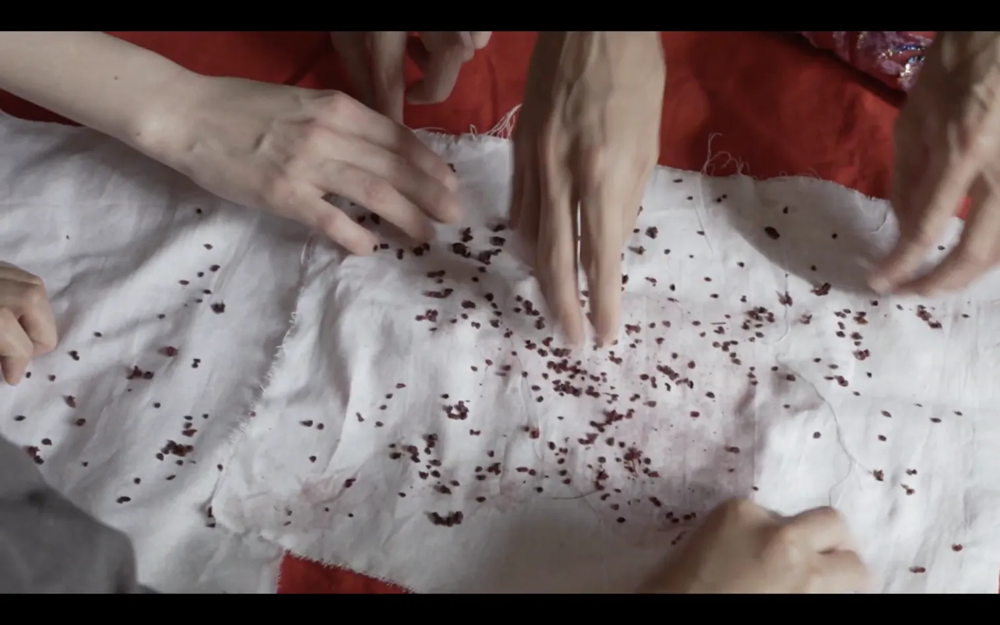
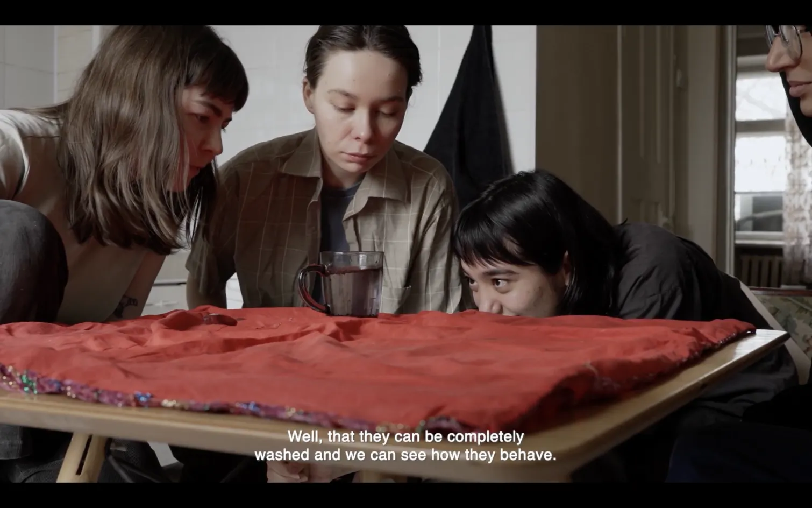
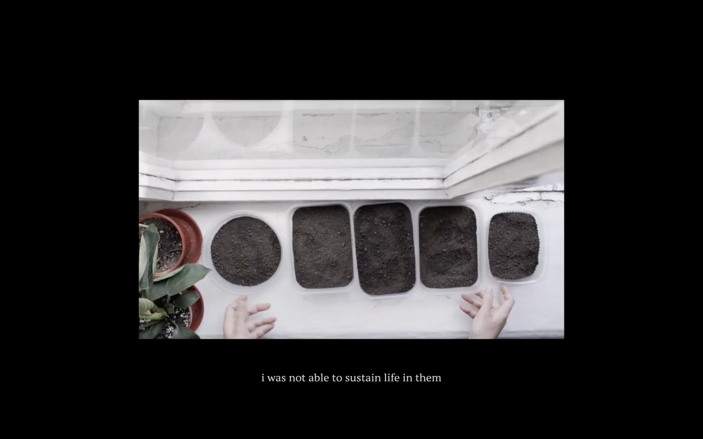

Menu
Menu
Loy qo’llar (with dirty hands) / Where Do the Plants Sleep?
Video, installation
2024–2025
‘Loy qo’llar / Where do the plants sleep?’ is a video installation shown at the Bukhara Biennial from 5 September to 20 November 2025. The work was created in Uzbekistan in 2024–2025 and explores connections between growing food and collective practices. It was built through the dialogue and friendship of eight people.
We worked together, meeting regularly to share what we were going through, generate ideas, plant seeds, read and write. Coming from different backgrounds, we listened and responded to each other through image and poetry. The video includes collective recordings, soil and plants, sound and poetry created with care. The atmosphere of the installation resembles the places where we usually meets, connecting viewers with our ways of life: life with(in) nature, between grass and sky, trees and mountains, gardens and streets.
The work draws on Mahmoud Darwish’s poetry and Tasnem Aaed’s reflections, as well as literature and cinema on earth and land, developed with dirty hands (“loy qo’llar”).
Team:
Concept: Gulnoza Ergasheva;
The room was designed with Bukharian handmade carpets, plants from a local bazaar, and ceramics by Hasan Sharipov from Gijduvon.
Commissioned by Art and Culture Foundation for Bukhara Biennial, Gavkushon Madrasa, Bukhara, UZ



Ссылка на фильм, доступ с паролем
Доступ по запросу, напишите письмо